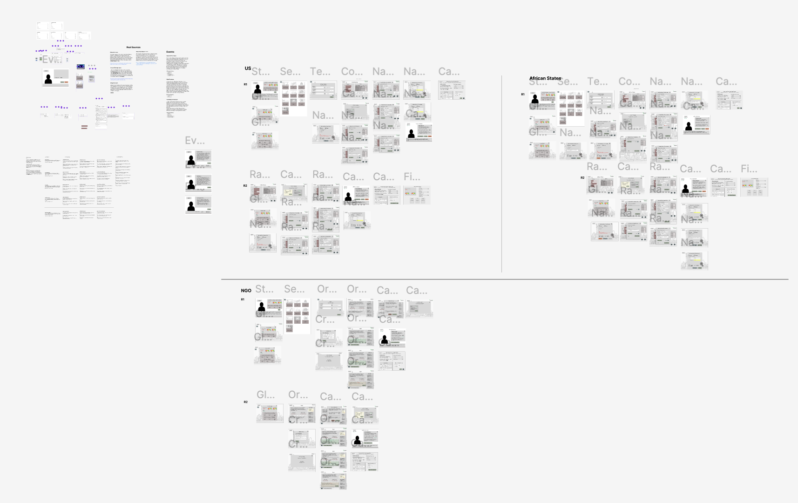
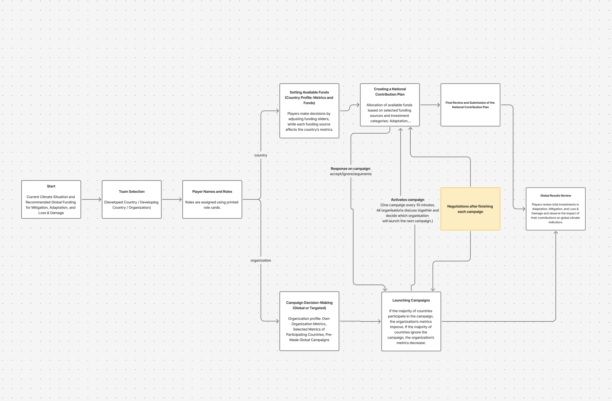
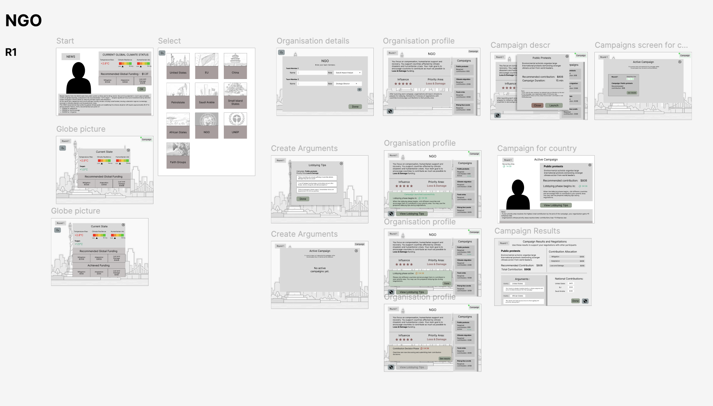

Climate Finance App
Skills Used In This Project

The Challenge
The project began with an ambition, but no clear product shape. Climate finance involves competing priorities, different funding sources, and difficult negotiations.
My challenge was to understand a complex real-world process and transform it into a simple and engaging game, while keeping it as close as possible to the reality of climate finance negotiations.
Research
I carried out extensive research into climate finance, international negotiations, and the roles of countries and organisations.
I explored mitigation, adaptation, and loss and damage funds, and researched the current state of climate finance — including where funding is sufficient, where major gaps remain, and the key challenges, barriers, and misunderstandings within the process.
When developing the player profiles, I researched real countries and organisations involved in climate finance initiatives — their roles, responsibilities, goals, and available resources. This helped ensure that the game reflected the real-world context as accurately as possible, without creating misleading assumptions or reinforcing biases among young players.


User flows and wireframing
Based on my research, I identified three main player types involved in the game: higher-income countries, lower-income countries, and organisations. I created a separate user flow for each, reflecting their different roles, goals, and actions. While each flow followed its own path, they interacted at key points throughout the game, as players needed to respond to each other’s decisions.
I also explored the three main areas of climate finance — mitigation, adaptation, and loss and damage — and integrated them into the game structure. The stakeholder highlighted this as an important learning goal: helping young people understand how climate finance is divided across these areas and how funding decisions affect each of them.
Prototype and Testing
For the testing stage, I created three working prototypes in Figma, one for each player type. At this stage, the visual design and UI were intentionally kept minimal, as the main goal was to test the core concept, user flows, and game mechanics before developing the final interface.
The prototypes were tested with around 15 participants, mainly students, as well as lecturers and representatives from Trócaire. The sessions focused on understanding how participants moved through the game, interacted with each other, and responded to the different funding decisions and scenarios.


Feedback and iterations
The testing provided valuable feedback, particularly around the game strategy. Several participants were Game Design students, who highlighted the importance of clearer player motivation and suggested introducing a facilitator to guide the activity and keep participants engaged throughout the game.
After reviewing all the feedback, I met with the TUS lecturers and Trócaire representatives involved in the project to rethink the game scenario. Together, we developed a much simpler facilitator-led approach.
Based on this new direction, I significantly simplified the application while keeping the original learning goals and stakeholder requirements at its core. Instead of managing three separate player journeys, the app became a shared tool that helps the facilitator easily guide the whole activity, manage funding decisions and track progress, while participants focus on discussion and negotiation. This made the experience simpler, more suitable for a young audience, and easier to use without losing the key learning outcomes.
The Results
What started as an open-ended idea with no defined structure became a fully functioning and visually engaging application that supports Trócaire’s educational work. The final solution is simple to use, suitable for a young audience, and helps facilitators explain a complex topic through an interactive group activity.
One of my biggest learnings from this project was the value of deep research. I spent a significant amount of time understanding climate finance, its challenges, and how the process works in the real world. This allowed me to simplify a highly complex topic without losing the reality behind it, and translate it into an experience that young people could understand and engage with.
The project also reinforced the importance of testing and user feedback. The insights from testing significantly changed the direction of the game and helped transform a complex initial concept into a much simpler and more focused solution.
This project highlighted one of my key strengths as a designer: I can dive deeply into a complex subject, understand how it works, identify what really matters, and translate that complexity into a clear and accessible experience.